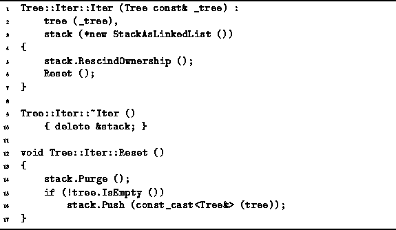

Data Structures and Algorithms
with Object-Oriented Design Patterns in C++
Data Structures and Algorithms
with Object-Oriented Design Patterns in C++
The code for the Tree::Iter
constructor and Reset
member functions is given in Program  .
The constructor is quite simple.
It takes as its lone argument a reference to a Tree instance
and initializes the two member variables as follows.
First, tree made to refer to the specified tree.
Next a new instance of the StackAsLinkedList class is created.
(The linked-list implementation of stacks
is described in Section ).
This stack will be used to contain subtrees of the given tree.
Since the subtrees of a tree are owned by that tree,
they cannot also be owned by the stack.
Therefore the RescindOwnership function of the stack is called.
Finally the Reset function is called.
The running time for the constructor is O(1) assuming Reset
takes a constant amount of time which indeed it does as we shall now see.
.
The constructor is quite simple.
It takes as its lone argument a reference to a Tree instance
and initializes the two member variables as follows.
First, tree made to refer to the specified tree.
Next a new instance of the StackAsLinkedList class is created.
(The linked-list implementation of stacks
is described in Section ).
This stack will be used to contain subtrees of the given tree.
Since the subtrees of a tree are owned by that tree,
they cannot also be owned by the stack.
Therefore the RescindOwnership function of the stack is called.
Finally the Reset function is called.
The running time for the constructor is O(1) assuming Reset
takes a constant amount of time which indeed it does as we shall now see.

Program: Tree::Iter Class Constructor and Reset Member Function Definitions
The Reset function is called whenever it is necessary to start a new preorder traversal. It begins by calling the Purge function to make sure that the stack is empty. Then, if the associated tree is not empty, that tree is pushed onto the stack. The running time of the Reset function depends on the number of items in the stack when it is called.
Of course, the stack is initially empty. Therefore, the first time Reset is called (by the constructor) it runs in constant time. However, if the Reset function is called only after a traversal is completed, the stack will always be empty when the function is called. Therefore, under these circumstances, the running time for the Reset function is O(1).
 Copyright © 1997 by Bruno R. Preiss, P.Eng. All rights reserved.
Copyright © 1997 by Bruno R. Preiss, P.Eng. All rights reserved.